1.Quartiers Historiques De Singapour
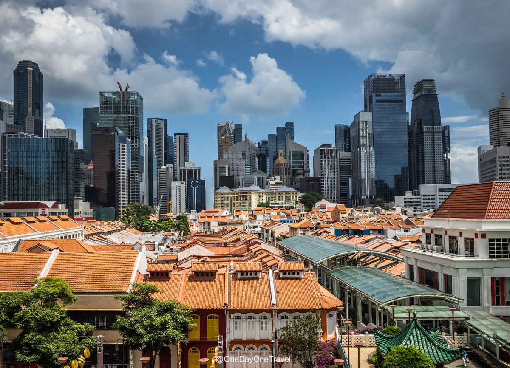
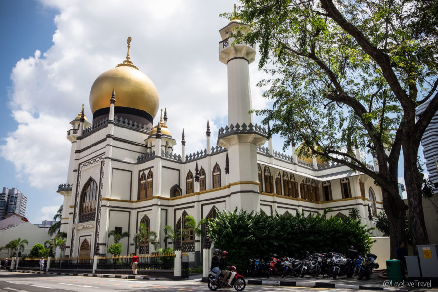
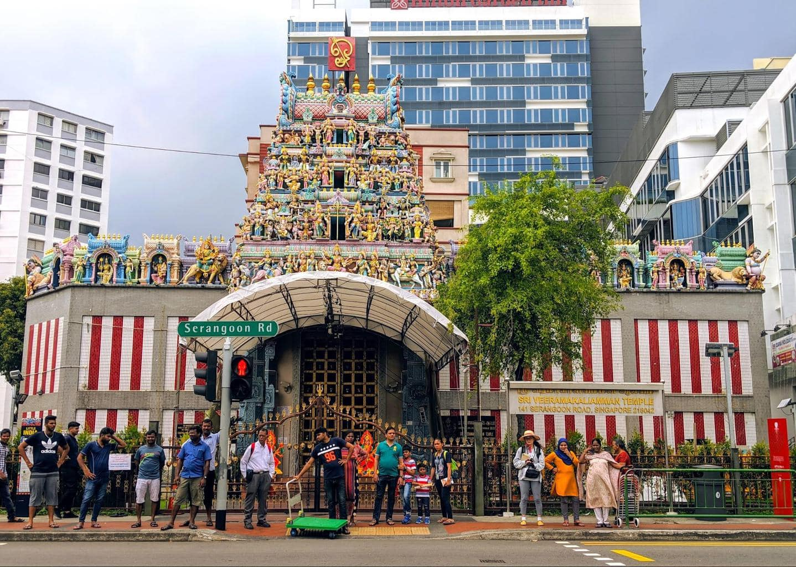
On imagine souvent Singapour comme une ville faite de buildings et de centres commerciaux. C’est vrai, il y en a beaucoup! Mais pas seulement, en fait, on y trouve aussi des petits quartiers avec des maisons à taille humaine, comme Chinatown, Havelock Road et autres. Hauts en couleurs, ils séduisent par leur architecture originale, leurs bars branchés, et leurs nombreux délicieux restaurants. Nul doute que ces quartiers animés vous séduiront par leur beauté et leur ambiance uniques sur cette île, ils sont souvent appellés "Les trois (3) quartiers historiques de Singapoure".
Concernant le quartier Chinatown, Il est très agréable de se promener dans ses rues, d’aller voir ses temples et ses marchés, et d’aller manger dans ses restaurants à la mode. Vous pouvez aller voir son Wet Market, puis acheter des babioles dans l’une de ses nombreuses boutiques, et tout simplement vous imprégnez de l’ambiance captivante de ses rues grouillantes de monde.
Autre quartier qui a gardé son identité : Little India. Avec ses étroites ruelles, ses musiques de Bollywood, ses temples et ses shophouses (maisons-boutiques) aux façades colorées, ce quartier saura vous surprendre et vous captiver. On y trouve partout des boutiques de produits venus d’Inde (épices qui embaument les rues, bijoux, guirlandes de fleurs, CD, décorations, etc…). Bruyante et désordonnée, pleins d’odeurs er de couleurs, Little India va à l’encontre du stéréotype singapourien, et ce qui lui donne un charme si singulier et envoutant.
le quartier de Kampong Glam, surnommé Arab street, est lui beaucoup plus paisible. Avec ses belles mosquées, sa succulente cuisine de rue, et ses boutiques branchées, ce quartier ne manque pas d’attrait.
On imagine souvent Singapour comme une ville faite de buildings et de centres commerciaux. C’est vrai, il y en a beaucoup! Mais pas seulement, en fait, on y trouve aussi des petits quartiers avec des maisons à taille humaine, comme Chinatown, Havelock Road et autres. Hauts en couleurs, ils séduisent par leur architecture originale, leurs bars branchés, et leurs nombreux délicieux restaurants. Nul doute que ces quartiers animés vous séduiront par leur beauté et leur ambiance uniques sur cette île, ils sont souvent appellés "Les trois (3) quartiers historiques de Singapoure".
Concernant le quartier Chinatown, Il est très agréable de se promener dans ses rues, d’aller voir ses temples et ses marchés, et d’aller manger dans ses restaurants à la mode. Vous pouvez aller voir son Wet Market, puis acheter des babioles dans l’une de ses nombreuses boutiques, et tout simplement vous imprégnez de l’ambiance captivante de ses rues grouillantes de monde.
Autre quartier qui a gardé son identité : Little India. Avec ses étroites ruelles, ses musiques de Bollywood, ses temples et ses shophouses (maisons-boutiques) aux façades colorées, ce quartier saura vous surprendre et vous captiver. On y trouve partout des boutiques de produits venus d’Inde (épices qui embaument les rues, bijoux, guirlandes de fleurs, CD, décorations, etc…). Bruyante et désordonnée, pleins d’odeurs er de couleurs, Little India va à l’encontre du stéréotype singapourien, et ce qui lui donne un charme si singulier et envoutant.
le quartier de Kampong Glam, surnommé Arab street, est lui beaucoup plus paisible. Avec ses belles mosquées, sa succulente cuisine de rue, et ses boutiques branchées, ce quartier ne manque pas d’attrait.
2.Jardin De La Baie
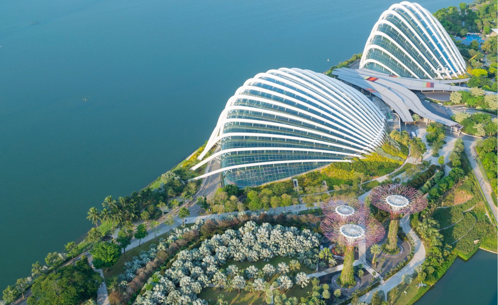
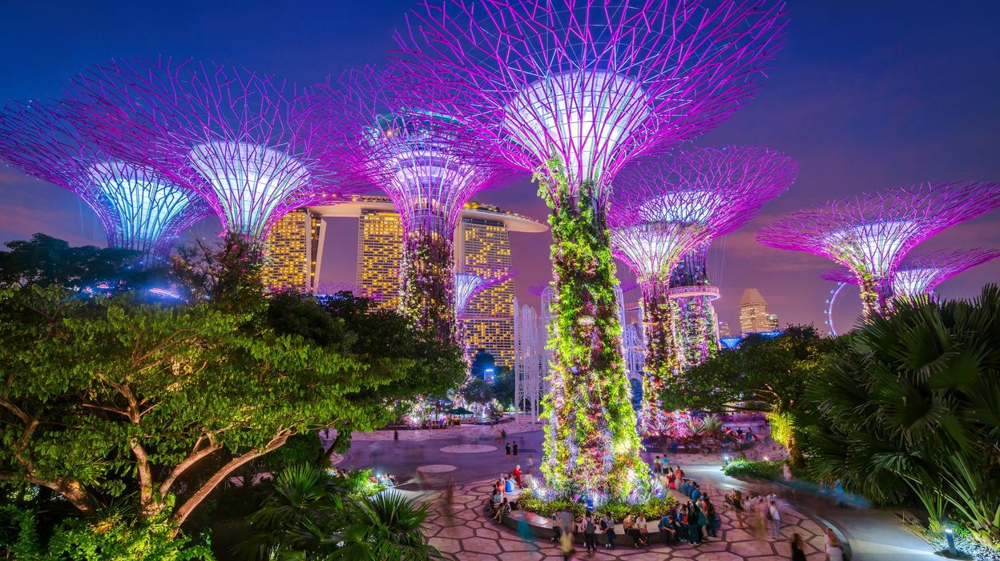
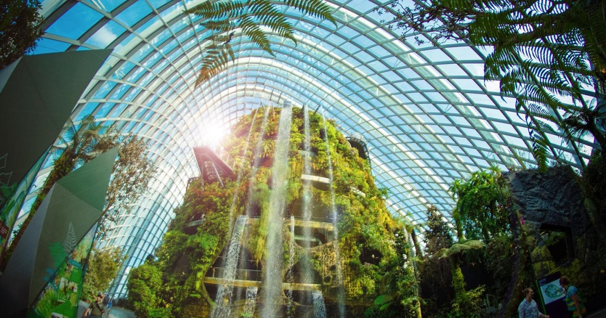
S’il ne fallait vous recommander qu’un seul endroit à Singapour, ce serait très certainement Gardens by the Bay ! En effet, ce parc est vraiment incontournable si vous comptez visiter Singapour.Situé dans le quartier de Marina Bay, juste à côté du célèbre Marina Bay Sands, les Gardens by the Bay sont d’immenses jardins futuristes composés d’une partie extérieure mais aussi de deux grandes serres.Dans ce billet dédié à ces jardins de Singapour, je vous en dis plus sur le sujet et vous donne toutes les informations utiles pour visiter Gardens by the Bay lors de votre séjour à Singapour.
Gardens by the Bay, ou jardins de la baie, est un immense parc de Singapour qui s’étend sur plus de 100 hectares. Situé en bordure de la baie de Singapour, ce parc clairement futuriste a été ouvert durant le courant de l’année 2012. Garden by the Bay est désormais un incontournable pour celui qui visite Singapour.
Les 2 dômes des Gardens by the Bay s’étendent sur une hectare environ pour chaque dôme … Dans la suite du billet, je vous donne plus d’informations sur les différents endroits des jardins de la baie de Singapour. Les dômes sont les attractions principales des Gardens by the Bay (avec les Supertree Grove). Si observer les arbres métalliques depuis le sol est gratuit, l’accès aux dômes est quant à lui payant.
Gardens by the Bay, ou jardins de la baie, est un immense parc de Singapour qui s’étend sur plus de 100 hectares. Situé en bordure de la baie de Singapour, ce parc clairement futuriste a été ouvert durant le courant de l’année 2012. Garden by the Bay est désormais un incontournable pour celui qui visite Singapour.
Les 2 dômes des Gardens by the Bay s’étendent sur une hectare environ pour chaque dôme … Dans la suite du billet, je vous donne plus d’informations sur les différents endroits des jardins de la baie de Singapour. Les dômes sont les attractions principales des Gardens by the Bay (avec les Supertree Grove). Si observer les arbres métalliques depuis le sol est gratuit, l’accès aux dômes est quant à lui payant.
3.Le Marina Bay Sands
 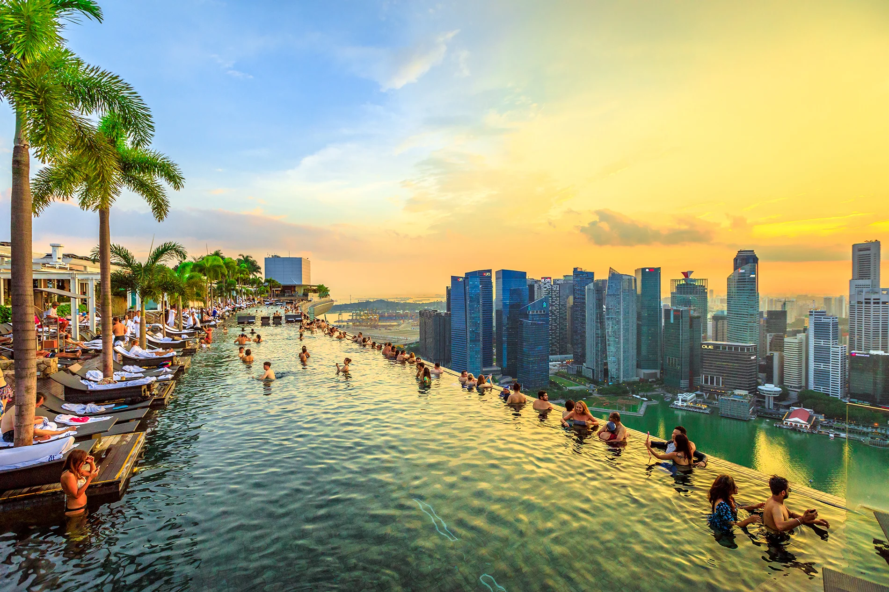
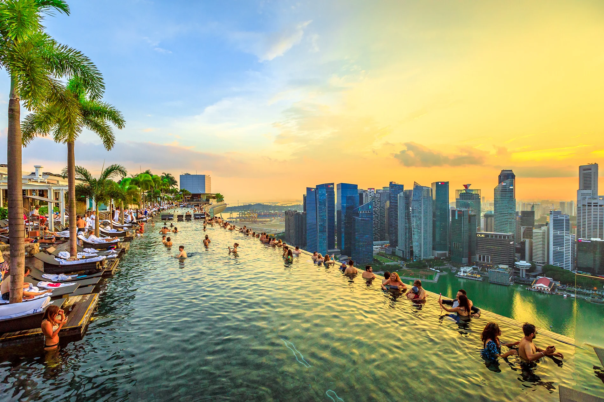

Imaginé par l'architecte Moshe Safdie, le Marina Bay Sands a officiellement ouvert le 23 juin 2010. Il devait coûter 4 milliards de dollars mais finalement il a coûté 5,5 milliards de dollars. Il est formé de trois hôtels de 55 étages surmontés d'une terrasse (la Sands SkyPark) dont la particularité est d'accueillir l'Infinity pool, la plus longue piscine en hauteur du monde, une piscine à débordement de 150 mètres de longueur et de 12 400 m2, à deux cents mètres de hauteur.
Celle-ci est conçue par le cabinet Denniston de Jean-Michel Gathy. L'entreprise VSL a hissé le pont supérieur.Le casino, construit devant les tours, comporte 1 000 tables à jeu et 1 400 machines à sous. Le musée, en forme de lotus, a ouvert le 17 février 2011.
4.L'île De Sentosa
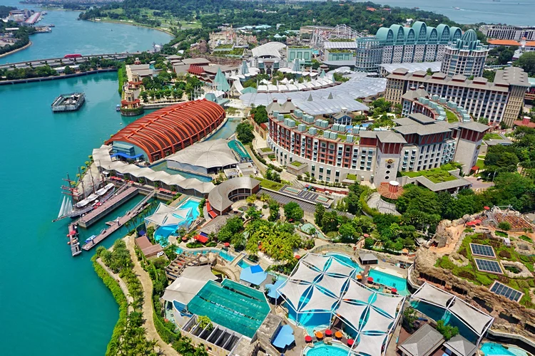
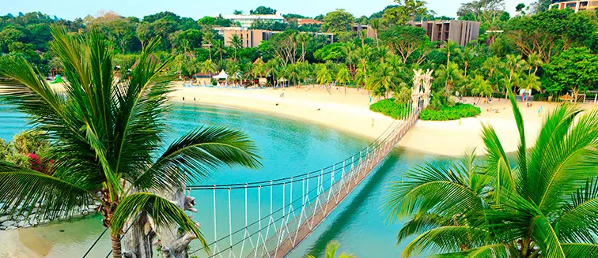
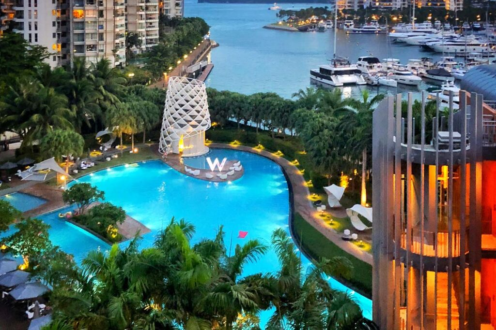
Les îles du sud, les Southern Islands, terme utilisé par les urbanistes singapouriens, regroupent les îles de Kusu, Lazarus, Seringat Kias, Tekukor, St. John's, Sentosa, et les Sister's Islands. Elles ont vu leurs aspects profondément modifiés depuis les années 1970 avec le système de land réclamation (remblayage de terrain pour étendre la superficie de l'île en construisant sur la mer) pour créer des zones de baignade et des lagons artificiels.Cependant, l'histoire de cette île n'a pas toujours été aussi joyeuse. Au XIXème siècle, son nom, Pulau Blakang Mali, traduit en malais, signifiait « l'île derrière la mort ». Une des versions de l'origine de ce nom étrange est que des esprits sanguinaires hantaient cette île. Pendant la seconde guerre mondiale, malgré les trois forts qui la protégeaient, elle fut le théâtre de l'une des plus cinglantes défaites de l'empire britannique. Occupée par les Japonais, elle s'est alors transformée en camp de prisonniers de guerre, comptabilisant jusqu'à 400 soldats alliés. Dans les années 1960, de par sa situation stratégique près de l'île principale, un scénario de transformation pour abriter des bâtiments industriels dédiés à l'armée avait été longuement étudié. Finalement, dans les années 1970, le projet touristique gagna la partie et en 1972, les premiers travaux furent lancés pour accueillir resorts, plages et attractions. Pour gommer son histoire tragique, le nom de l'ile fut changé en Sentosa, traduit par « paix et tranquillité ».Aujourd'hui, avec plus de 19 millions de personnes qui ont franchi l'année dernière son péage, cette île, reliée à la terre par un cable-car et un pont, est un des emblèmes de réussite de la planification singapourienne en termes de tourisme et de développement des loisirs vers la mer. Le projet de développement touristique ne devait, cependant, pas s'arrêter là. Les autres îles du Sud devaient être intégrées dans ce grand projet de rénovation et de conquête de territoire.
Les îles du sud, les Southern Islands, terme utilisé par les urbanistes singapouriens, regroupent les îles de Kusu, Lazarus, Seringat Kias, Tekukor, St. John's, Sentosa, et les Sister's Islands. Elles ont vu leurs aspects profondément modifiés depuis les années 1970 avec le système de land réclamation (remblayage de terrain pour étendre la superficie de l'île en construisant sur la mer) pour créer des zones de baignade et des lagons artificiels.Cependant, l'histoire de cette île n'a pas toujours été aussi joyeuse. Au XIXème siècle, son nom, Pulau Blakang Mali, traduit en malais, signifiait « l'île derrière la mort ». Une des versions de l'origine de ce nom étrange est que des esprits sanguinaires hantaient cette île. Pendant la seconde guerre mondiale, malgré les trois forts qui la protégeaient, elle fut le théâtre de l'une des plus cinglantes défaites de l'empire britannique. Occupée par les Japonais, elle s'est alors transformée en camp de prisonniers de guerre, comptabilisant jusqu'à 400 soldats alliés. Dans les années 1960, de par sa situation stratégique près de l'île principale, un scénario de transformation pour abriter des bâtiments industriels dédiés à l'armée avait été longuement étudié. Finalement, dans les années 1970, le projet touristique gagna la partie et en 1972, les premiers travaux furent lancés pour accueillir resorts, plages et attractions. Pour gommer son histoire tragique, le nom de l'ile fut changé en Sentosa, traduit par « paix et tranquillité ».Aujourd'hui, avec plus de 19 millions de personnes qui ont franchi l'année dernière son péage, cette île, reliée à la terre par un cable-car et un pont, est un des emblèmes de réussite de la planification singapourienne en termes de tourisme et de développement des loisirs vers la mer. Le projet de développement touristique ne devait, cependant, pas s'arrêter là. Les autres îles du Sud devaient être intégrées dans ce grand projet de rénovation et de conquête de territoire.
5.Zoo De Singapour
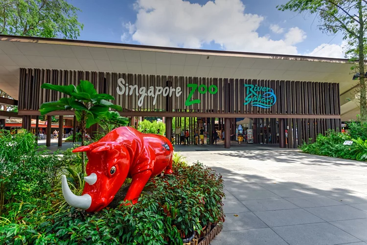
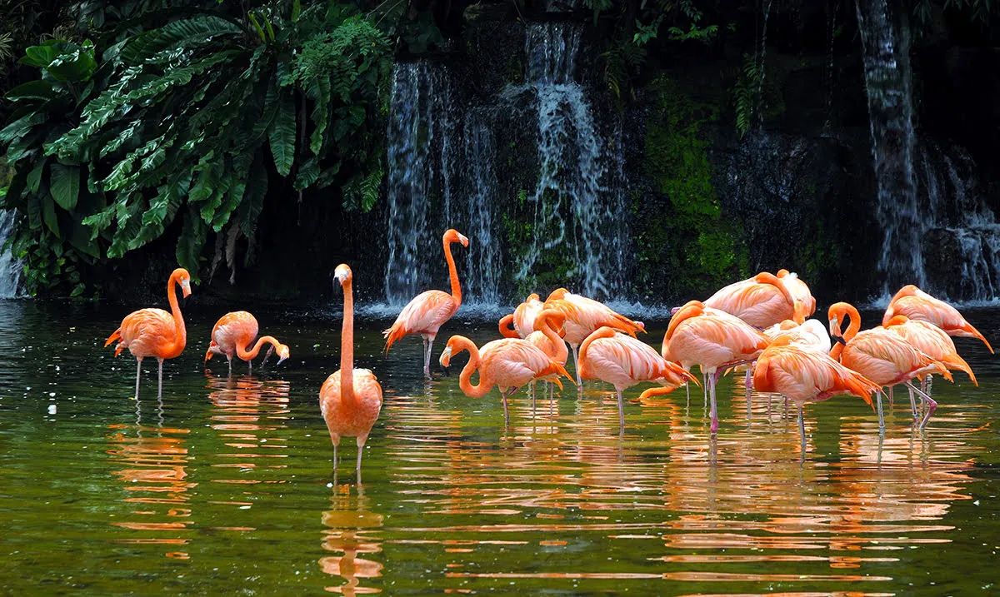

Construit à un coût de 63 millions de dollars, il a été inauguré en 1994. On y trouve de nombreuses espèces d'animaux et certains à une grande proximité, le zoo en lui-même apporte un certain réalisme au niveau du cadre naturel assez tropical. La visite du zoo peut s'effectuer en petit bus ou à pied.Étendu sur une surface d’environ 69 hectares, le Zoo de Singapour est situé à l’est de l’île et propose une disposition en « concept ouvert » pour maximiser la capacité des animaux à se déplacer et à se mélanger comme ils le feraient dans la nature. Le Zoo de Singapour se trouve au 80 Mandai Lake Road ; il est ouvert 7j/7 de 8h30 à 18h.Au zoo, les visiteurs ont la possibilité d’observer plus de 300 espèces d’animaux et d’insectes du monde entier. Le zoo comprend une forêt tropicale et est divisé en zones d’habitats présentant des espèces qui vivent ensemble à l’état sauvage.Le Zoo de Singapour propose un concept de zonage intéressant dans lequel les animaux se mélangent comme ils le feraient dans leur habitat naturel, sans être traqués par des prédateurs. Promenez-vous dans toutes les zones du zoo et pensez à garder votre appareil-photo à portée de main ! Sur ceux Nous vous remercions d'avoir éffectuez ce voyage avec nous nous espérons que nous nous retrouverons. BONNE CONTINUATION ET MERCI POUR VOTRE CONFIANCE !!!
Construit à un coût de 63 millions de dollars, il a été inauguré en 1994. On y trouve de nombreuses espèces d'animaux et certains à une grande proximité, le zoo en lui-même apporte un certain réalisme au niveau du cadre naturel assez tropical. La visite du zoo peut s'effectuer en petit bus ou à pied.Étendu sur une surface d’environ 69 hectares, le Zoo de Singapour est situé à l’est de l’île et propose une disposition en « concept ouvert » pour maximiser la capacité des animaux à se déplacer et à se mélanger comme ils le feraient dans la nature. Le Zoo de Singapour se trouve au 80 Mandai Lake Road ; il est ouvert 7j/7 de 8h30 à 18h.Au zoo, les visiteurs ont la possibilité d’observer plus de 300 espèces d’animaux et d’insectes du monde entier. Le zoo comprend une forêt tropicale et est divisé en zones d’habitats présentant des espèces qui vivent ensemble à l’état sauvage.Le Zoo de Singapour propose un concept de zonage intéressant dans lequel les animaux se mélangent comme ils le feraient dans leur habitat naturel, sans être traqués par des prédateurs. Promenez-vous dans toutes les zones du zoo et pensez à garder votre appareil-photo à portée de main ! Sur ceux Nous vous remercions d'avoir éffectuez ce voyage avec nous nous espérons que nous nous retrouverons. BONNE CONTINUATION ET MERCI POUR VOTRE CONFIANCE !!!